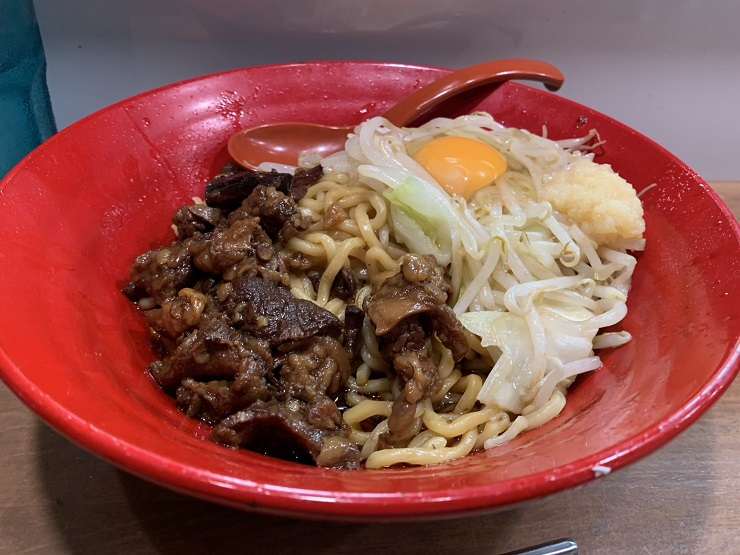

今日は 1コマだけなので、わざわざ遠出するのも若干面倒な気持ちになる。まぁそれはスケジュール通りで、しばらくは一日 1, 2 コマずつの日が続くのだが。
とは言え、今日は初めての技能なので、楽しみでもある。めっちゃ緊張したが。
技能教習 1時限目
学課教習とは違って、1番の項目から順番に習う。基本的なことから習っていかないと運転出来ないので、ある意味当たり前か。
教官側も生徒側の進捗を知らないので、その時限で教習原簿を渡すまで次に何やるかを知らないのが、少し面白い。
1. 車の乗り降りと運転姿勢
座席の調整の仕方とか。
- ハンドルをいったん一番奥にずらす
- お尻と背中を座席に押し込む
- 座席上下の二つは一番上にしておく
- リクライニングは 90度に 見えるようにしておく。本当は 105度になるように、とかなんとか
- ブレーキペダルを踏みきっても足が伸びきらない位置まで、座席を前に出す
- ハンドル頂上に手を伸ばしたときに、第一関節に乗る位置までハンドルを手前に出す
- シートベルト
教習用のバスなので、前扉が無くて代わりに教官が座る助手席があるのが面白い。
補助ブレーキや状況確認用ランプがあるのは良いんだけど、多分、普通車と違ってハンドルは取ってくれないんだろうな。
2. 運転装置の取り扱いと日常点検整備等
運転装置
大半は普通車と一応同じなので、ささっと説明を受けた。
- エンジンの起動前・停止後には別途、奥にあるメインスイッチを ON/OFF する必要がある
- ON は引っ張る、OFF は左に回しながら押し込む
- 排気ブレーキは左のレバーを下に
- シフトレバーはフィンガーシフト
- ドライブ・バイ・ワイヤになっていて、圧縮空気による変速をリモートで指示する形になる
- シフトレバーが入ってから、ギヤが実際に入るまでに、2秒(!)くらいかかる
- ドライブ・バイ・ワイヤになっていて、圧縮空気による変速をリモートで指示する形になる
- シフトパターン、2速発進メインだから偶数段・奇数段が普通車と上下逆なのは良いとして、N の左右の位置がイメージと違った(と言うか車種によって違うっぽい)
- N が 4速と5速の間にあるタイプ
- 2速に入れるときは左上に押し込む(普通車の1速と同じ操作になる)
- N が 2速と3速の間にあるタイプ
- 2速に入れるときは真上に押し込む(今回のバスはこっちだった。まだ慣れない。)
- シフトパターンプレート見ても、N の位置は書いてなかった気がするんだが、どうやって判断すればいいんだろうか
- N が 4速と5速の間にあるタイプ
- あれ、そういえばハザードはどうやるんだ？
日常点検整備
一回降りて車体を回りながら、バスならではのポイントを中心に。トラックについても軽く。
3. 車両特性に基づく運転死角と車両感覚等を理解した運転操作
死角とかは、あんまり説明されてないかも。
車体高さの話はあった。「あの可変ゲートくぐれると思う？」「目視の感覚、結構当てにならないでしょ。」とか。
4. 基本的な運転操作
そして、実際に運転。わりといきなり運転させられる感じで、「あれ、説明終わり？アドバイスとか無しでいきなり発進なの？って言うかバス、でかくね？」って思ってしまった。
残り時間もそんなに無かったから、多分 10分～15分くらいしかやっていないと思うんだけど、めっちゃ疲れた。終わったあと自分の車で帰りたくないと思う程度には、疲れた。
2限連続とかじゃなくて良かったと思ってしまったよ。場内の外周を数周と右左折・信号を数回ずつだけだったハズなんだけどね。
クラッチペダル
思ったより手前まで戻さないとつながらなかった。おかげで、半クラのときに下記シフトチェンジミスと勘違いしやすかった。
多分、椅子が近い。次回は、座席をあんまり近づけすぎないようにする。
シフトチェンジ
何回かミスった。シフトレバーを2秒くらい押しっぱにしないと入らないのだが、いつもの癖ですぐ手を離してしまう。
すぐ忘れるので、次やるときは意識必要。
あと、2速つながったらすぐ3速にする。って言うか 3速でもめっちゃトルクある。昔ぼむ者＠が「バスは低速トルクの化け物だから」って言っていたが、20年越しに体で理解した。
ブレーキ
これが一番ヤバい。エアブレーキ、マジで慣れない。
最初は全く効いていないように感じて、そのあとにガックンとなってしまう。
ネット上の一説によると、まずはある程度踏んで、そのあとじわじわ戻していくのが良いとか？
教官に、効くまでに時間が掛かるように感じる仕組みを聞いておきたい。ペダルの遊びが大きいだけなのか、効くまでの時間に遅延があるのか。
次回は、直線後のカーブ手前で、毎回減速の練習をするべき。そのためにも、直線では速度を上げる。
車幅感覚
正直、シフトチェンジとブレーキに精一杯だったので、あまり見られていない。
直線は、ちゃんと左右のミラーを見ないとダメかもしれない。普段よりかなり中央線に近いところを走っているつもりだったのだが、何回か「少し左に寄っていますね」って言われた。
内輪差
ホイールベースが長いので、内輪差も大きい。
後輪は、サイドミラーで見える反射板の、さらに奥にある。縁石と後輪との距離を都度確認する。
さらに、運転席は前輪より前にあるので、ハンドルを切るタイミングはさらに遅い。
交差点では気をつけてゆっくり曲がるから、まだなんとかなりそう。はみ出しまくってから曲がるイメージも元々持っているしね。
ヤバいのは外周のカーブ。ある程度スピードがあるから確認・判断する暇が少ないし、そもそも普段は普通のカーブで内輪差は意識していないから気付きにくい。
とりあえず、(場内では？) 対向車線にはみ出しまくって良いのを覚えておく。対向車に注意。
おまけ: 教官による鋭角
教習車両を停めておく場所が鋭角の中だったので、最後教官がそこにバスを戻すときに、 鋭角での切り返しを実演してくれた。狭い道で120度ターンする、二種免許取るのに必要な課題の一つね。
……理屈は分かっていたよ？タイヤが縁石を踏まなければ車体が芝生の上にはみ出しても良い。普通車はタイヤの後ろに運転席があるが、バスはタイヤより前にあるから、運転席ごと芝生の上に飛び出すことになる。うん、知識としては理解していた。こんな動画も見たことあるしね。
でも、実際に体験したらマジ意味不明で面白かった。
もうぶつかるから止まろうと思ってからさらに 2m くらい進むので壁の中に居る感覚になったり、道路の上じゃ無くて芝生の上に居るので宙に浮いている感覚になったり、助手席座っているだけだったのにとにかく斬新だった。
って言うか、鋭角に入るための右折の時点で芝生にはみ出しながら侵入していったのだが、それだけで謎の感動があったわ。
夜飯
今日は 18:10 終わりだったので、前回候補に挙げつつも営業時間的に行けなかったらーめんしょっぷ中吉へ。具体的な数字は思い出せないが、こっちも八年ぶりくらいな気がする。って言うかいつの間にか移転していた。

牛すじぶっかけ(温かい麺)＋ニンニク。
甘辛いタレ、流水で一度締めたあとに温め直した食感の良い麺。そしてとろとろの牛すじ。こちらも相変わらず美味しかったです。